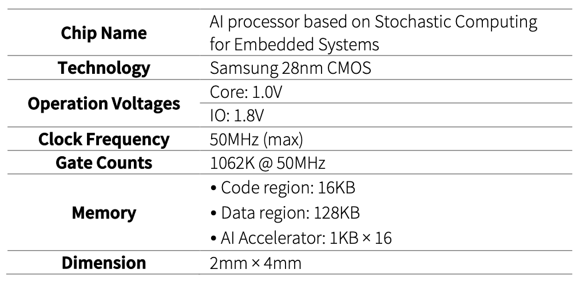
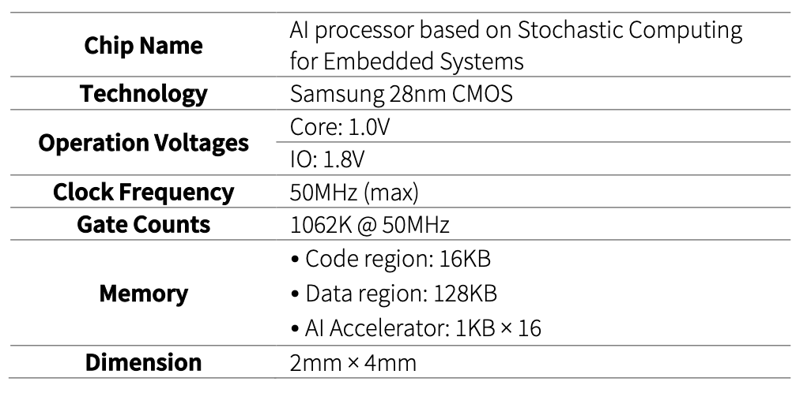
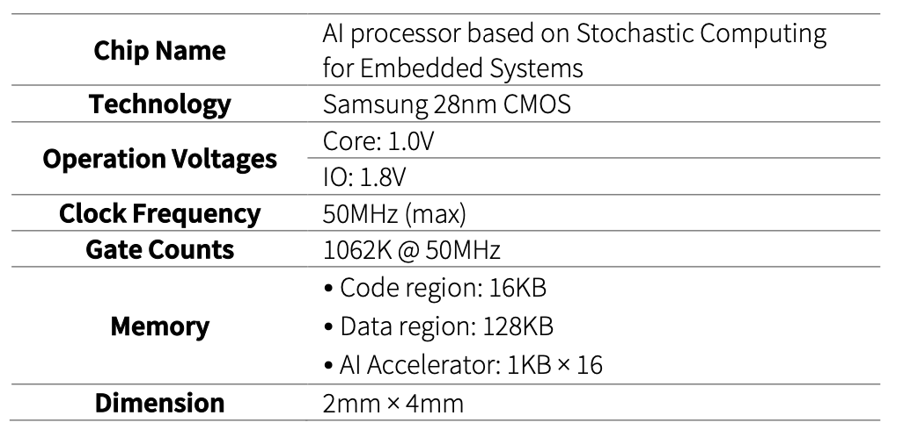

Title: [AI processor based on Stochastic Computing for Embedded Systems](../images/asic/certificate_ss.png)
Fab-in: 2022-07-18
Designer: Jeongeun Kim, Kwonneung Cho, Changyeop Han, Won Sik Jeong
 

Title: [AI processor based on Stochastic Computing for Embedded Systems](../images/asic/certificate_ss.png)
Fab-in: 2022-07-18
Designer: Jeongeun Kim, Kwonneung Cho, Changyeop Han, Won Sik Jeong

Title: [In-Vehicle Network Processor based on Cortex-MO](../images/asic/certificate_hm.png)
Fab-in: 2022-03-16
Designer: Cho Kwon Neung, Jeongeun Kim, Hyunwoo Oh